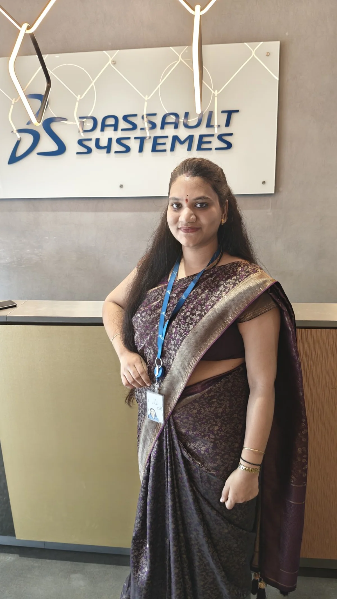

Make knowledge usable
Good content should help someone act, not just inform them.
I’m Aarti Kunal Mahurkar, an Operations Excellence Specialist working across reseller enablement, learning content, certification support and operational execution.

My journey moved from dispatch operations into PLM and then into Operations Excellence. Today I work where learning, partner support, certification operations, dashboards and digital content meet.
Good content should help someone act, not just inform them.
Operations excellence is built through consistency and clarity.
Real user needs should shape the next iteration.
Partner onboarding, certification guidance and support that helps resellers keep moving toward enablement goals.
Creating structured digital learning experiences for resellers and internal employees.
Process support, dashboards, recurring backend activities and execution follow-through.
Dassault Systèmes Global Services • Pune
Dassault Systèmes Global Services • Pune
Dassault Systèmes Global Services
PLM Nordic • Siemens Partner
JMD Agro Food Product Ltd.
Certification support, reseller guidance and enablement coordination.
Digital course creation, review cycles, narration and video content.
Dashboard support, recurring workflows and backend execution.
3DEXPERIENCE, Teamcenter, Excel and foundational SQL.
A stronger partner ecosystem,
a more skilled community,
a bigger impact — together.
Let’s talk about Operations Excellence, Partner Enablement, Learning Experience and Enablement Operations roles.